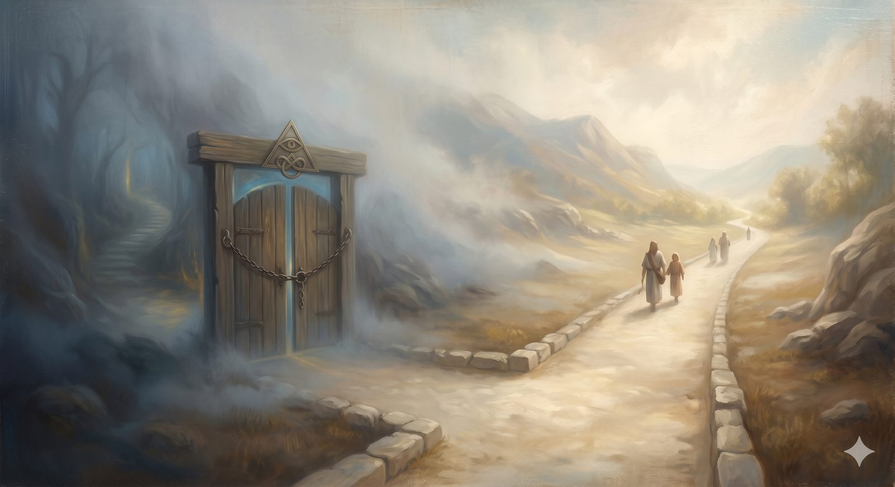

Gnosticism
Gnosticism — salvation by secret knowledge for an inner circle; its real ache about evil and matter, why it poisons creation, incarnation, and resurrection, and its modern forms from New Age to progressive hidden-meaning readings.
"...the Word became flesh and dwelt among us..." John 1:14 (ESV)
The third peril does not flatter your effort like the last one; it flatters your intelligence. It leans close and offers a secret — the suggestion that the real truth is hidden, that the ordinary public gospel is for the simple, and that you, if you follow the right teacher or unlock the right inner knowledge, could be among the few who truly understand. It is the oldest spiritual flattery there is, and it wears a hundred faces.
What it claimed"The real truth is hidden, and only some people have it"
Gnosticism was never a single movement but a family of related teachings in the first three centuries, united by a few instincts. The material world, they held, is either evil or deeply inferior — the botched work of a lesser deity — and salvation comes through gnosis, secret spiritual knowledge, rather than through faith, history, or bodily resurrection. The God of the Old Testament gets reframed as the inferior creator; the true God is higher, purely spiritual, reachable only by those who possess the hidden knowledge. The human soul is a divine spark trapped in the prison of matter, waiting to be liberated.
The real question it was trying to answerA genuine ache about evil and matter
The instinct here, too, has something real in it. Gnosticism is trying to answer the problem of evil — why is the world so broken if a good God made it? — and it offers a clean solution: the material simply is not God's best work, or not his work at all. It is also answering a genuine human hunger, the persistent feeling that there must be more than what lies on the public surface, some deeper truth beneath the ordinary. That ache is not wicked. But the answer it reaches for poisons three things the gospel cannot live without.
In plain terms
Gnosticism is the belief that the body and the physical world are bad, and that salvation means escaping them through secret knowledge available to an inner circle. It's seductive because it makes you feel like an insider. It's fatal because the gospel is public, bodily, and for everyone.
Where it went wrongIt poisons creation, incarnation, and resurrection
To hold it, you must reject the goodness of creation — but Genesis says God looked at the material world and called it good. You must reject the incarnation — but John says the Word became flesh, not that he temporarily wore it like a costume. And you must reject the bodily resurrection that Paul makes the hinge of everything. Worse still, it always builds a two-tier Christianity — the enlightened few who have the hidden knowledge, and the ordinary many who do not — which is the exact opposite of a gospel that tears down every dividing wall. It is no accident that the church's defining of the New Testament canon was, in part, a response to Gnostic groups producing their own secret gospels.
How the church respondedIrenaeus and the goodness of the Maker
Irenaeus of Lyon wrote Against Heresies around 180 — the church's first great comprehensive refutation, and worth knowing by name. His central argument struck at the root: the God who made the world is the same God who redeems it, and salvation is the redemption of material humanity, not an escape from it. The body is not the prison; it is part of what Christ came to save.
The modern rebrandWhere it walks today
The Gnostic structure is remarkably alive. New Age spirituality is almost entirely Gnostic in shape — the material world as illusion, the self as a divine spark needing liberation, special practices or teachers granting access to higher truth. The prosperity gospel's "revelation knowledge" tier reproduces it precisely: salvation is for everyone, but the real goods require secret faith-principles held by a special teacher. A strand of progressive Christianity rhymes with it whenever the plain sense of the text is dismissed as primitive and replaced by a "hidden" meaning available only to the enlightened reader. And the common line "I don't need the church; I have my own direct spiritual connection" — not always Gnostic, but it echoes the old pattern exactly when it prizes private spiritual experience over the community and the public Word.
The honest test: does this require access to something beyond Scripture and ordinary faith — a special knowledge, a particular teacher, a hidden layer of meaning — to reach the real goods?
These three — the diminished Son, the self-sufficient will, the secret knowledge — are the great recurring counterfeits, the perils a pilgrim is likeliest to meet on the open road today. But the slope of Mount Error holds more than three, and the shepherds would not let us descend without at least naming the rest.